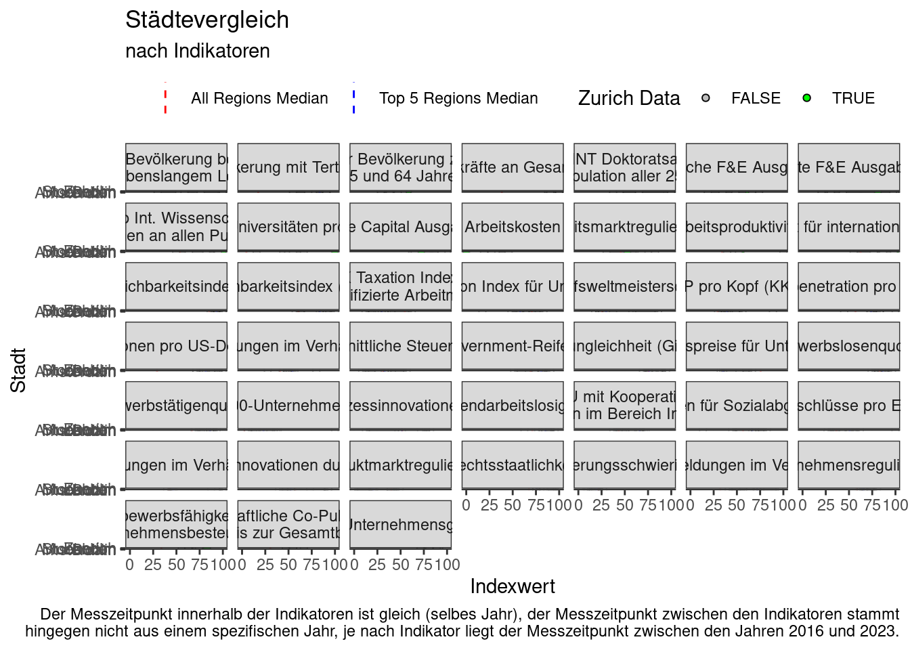

Für das Abschlussprojekt des Kurses Rstats-K009 konnten aus Gründen des Datenschutzes und der Verfügbarkeit kein Datensatz aus dem Arbeitsalltag der Autorin verwendet werden. Stattdessen wurde der Datensatz Vergleich der Standortattraktivität des Kantons Zürich mit europäschen Regionen aus dem öffentlich zugänaglichen Datenkatalog (open government data) des statistischen Amts des Kantons Zürich verwendet. Die Daten stammen vom Amt für Wirtschaft des Kantons Zürich und wurden am 18.12.2024 publiziert.
Die Indikatoren in diesem Datensatz vergleichen die Attraktivität des Wirtschaftsstandorts Kanton Zürich mit der von München, Stockholm, Amsterdam, Dublin und London. Sie bilden Grundlage der “Vergleichsanalyse Standortattraktivität”. Die Indikatoren bilden verschiedene Standortfaktoren ab, die einzelnen Werte bildet die Fachstelle Volkswirtschaft des Amts für Wirtschaft auf Basis von Daten der OECD, der EU und verschiedener think tanks.
Die Vergleichsregionen umfassen jeweils die entsprechende NUTS-2 Region. Entsprechend werden folgende Regionen verglichen: Oberbayern (Muenchen), Easternand Midland (Dublin), Noord-Holland (Amsterdam), UKI-London (London) und Stockholm. Zuerich bezieht sich auf das Gebiet des Kantons Zürich.
Daten
R Pakete laden
library(readr)library(dplyr)
Attaching package: 'dplyr'
The following objects are masked from 'package:stats':
filter, lag
The following objects are masked from 'package:base':
intersect, setdiff, setequal, union
── Conflicts ────────────────────────────────────────── tidyverse_conflicts() ──
✖ dplyr::filter() masks stats::filter()
✖ dplyr::lag() masks stats::lag()
ℹ Use the conflicted package (<http://conflicted.r-lib.org/>) to force all conflicts to become errors
Rows: 45 Columns: 14
── Column specification ────────────────────────────────────────────────────────
Delimiter: ","
chr (6): ID, Indikator, Zuercher_Daten, Dublin, Stockholm, London
dbl (8): Zuerich, Median_aller_Regionen, Median_der_5_Vergleichsregionen, Mu...
ℹ Use `spec()` to retrieve the full column specification for this data.
ℹ Specify the column types or set `show_col_types = FALSE` to quiet this message.
Warning: There were 3 warnings in `mutate()`.
The first warning was:
ℹ In argument: `Dublin = as.numeric(Dublin)`.
Caused by warning:
! NAs introduced by coercion
ℹ Run `dplyr::last_dplyr_warnings()` to see the 2 remaining warnings.
median_lines_all <- daten_t |>filter(Stadt =="Median_aller_Regionen") |>select(Indikator, Indexwert)median_lines_5 <- daten_t|>filter(Stadt =="Median_der_5_Vergleichsregionen") |>select(Indikator, Indexwert)custom_labeller <-function(labels) { labels <-as.character(labels) # Ensure labels are character strings labels[labels =="Anteil Bevölkerung beteiligt an lebenslangem Lernen"] <-"Anteil Bevölkerung beteiligt\n an lebenslangem Lernen" labels[labels =="Anteil neue MINT Doktoratsabsolventen im Verhältnis zur Population aller 25- bis 34-Jährigen"] <-"Anteil neue MINT Doktoratsabsolventen im\n Verhältnis zur Population aller 25- bis 34-Jährigen" labels[labels =="Wissenschaftliche Co-Publikationen im Verhältnis zur Gesamtbevölkerung"] <-"Wissenschaftliche Co-Publikationen \nim Verhältnis zur Gesamtbevölkerung" labels[labels =="BAK Taxation Index für hochqualifizierte Arbeitnehmende"] <-"BAK Taxation Index für\n hochqualifizierte Arbeitnehmende" labels[labels =="KMU mit Kooperationsaktivitäten im Bereich Innovation"] <-"KMU mit Kooperations-\naktivitäten im Bereich Innovation" labels[labels =="Anteil Top Int. Wissenschaftliche Publikationen an allen Publikationen"]<-"Anteil Top Int. Wissenschaftliche \nPublikationen an allen Publikationen" labels[labels =="Wettbewerbsfähigkeit der Unternehmensbesteuerung"] <-"Wettbewerbsfähigkeit der\n Unternehmensbesteuerung" labels[labels =="Anteil der Bevölkerung zwischen 15 und 64 Jahren"] <-"Anteil der Bevölkerung zwischen\n 15 und 64 Jahren"return(labels) # Return modified labels}daten_t |>filter(Stadt !="Median_aller_Regionen", Stadt !="Median_der_5_Vergleichsregionen") |>ggplot(aes(x = Indexwert, y = Stadt, fill = zuerich_binary)) +geom_boxplot(aes(x = Indexwert, group = Indikator), width =0.3, outlier.shape =NA, alpha =0.2, fill ="lightblue" )+facet_wrap(. ~ Indikator, labeller =as_labeller(custom_labeller)) +geom_vline(data = median_lines_all, aes(xintercept = Indexwert, color ="All Regions Median"), linetype ="dashed" ) +geom_vline(data = median_lines_5, aes(xintercept = Indexwert, color ="Top 5 Regions Median"), linetype ="dashed" ) +geom_segment(data = daten_t, aes(x = Maximalwert, xend = Maximalwert, y =2, yend =5),alpha =0.25 )+geom_segment(data = daten_t, aes(x = Minimalwert, xend = Minimalwert, y =2, yend =5),alpha =0.25 )+geom_point(shape =21)+scale_fill_manual(name ="Zurich Data", # Legend for fillvalues =c("TRUE"="green", "FALSE"="gray") ) +scale_color_manual(name =NULL, # Legend for the linesvalues =c("All Regions Median"="red", "Top 5 Regions Median"="blue") ) +theme_bw()+theme(legend.position ="top",)+labs(title ="Städtevergleich", subtitle ="nach Indikatoren", caption ="Der Messzeitpunkt innerhalb der Indikatoren ist gleich (selbes Jahr), der Messzeitpunkt zwischen den Indikatoren stammt\n hingegen nicht aus einem spezifischen Jahr, je nach Indikator liegt der Messzeitpunkt zwischen den Jahren 2016 und 2023.", )
Warning: Removed 3 rows containing non-finite outside the scale range
(`stat_boxplot()`).
Warning: Removed 3 rows containing missing values or values outside the scale range
(`geom_point()`).

Figure 1: Städtevergleich 1
2. Visualisierung erstellen
daten_t |>filter(Stadt !="Median_aller_Regionen", Stadt !="Median_der_5_Vergleichsregionen", Zuercher_Daten =="Ja") |>ggplot(aes(x = Indikator, y = Indexwert, color = Stadt, group = Stadt))+geom_point()+theme_stat()+scale_fill_manual(values=zhpal$zhcd)+scale_color_discrete()+scale_x_discrete()+coord_flip()+theme(axis.text.y =element_text(size =10),axis.text.x =element_text(angle =90, hjust =1, vjust =1,margin =margin(t =0, r =0, b =0, l =0)),plot.margin =margin(t =5, r =5, b =5, l =5, unit ="pt"))
ggplot(plot_daten, aes(x =reorder(Indikator, Difference), y = Difference, fill = Difference >0)) +geom_col() +coord_flip() +theme_stat()+scale_fill_manual(values=zhpal$zhwebdataviz[1:2]) +labs(title ="Differenz zwischen Zürich\nund dem Median der 5\nVergleichsregionen",x ="Indikator",y ="Differenz zum Median") +theme(axis.text.y =element_text(size =6),legend.position ="none")
ggplot(plot_daten3, aes(x =reorder(Indikator, Difference), y = Difference, fill = Difference >0)) +geom_col() +coord_flip() +theme_stat()+scale_fill_manual(values=zhpal$zhwebdataviz[5:6]) +labs(title ="Differenz zwischen Dublin\nund dem Median der\n5 Vergleichsregionen",x ="Indikator",y ="Differenz zum Median") +theme(axis.text.y =element_text(size =6),legend.position ="none")
Warning: Removed 1 row containing missing values or values outside the scale range
(`geom_col()`).
ggplot(plot_daten6, aes(x =reorder(Indikator, Difference), y = Difference, fill = Difference >0)) +geom_col() +coord_flip() +theme_stat()+scale_fill_manual(values=zhpal$zhwebdataviz[11:12]) +labs(title ="Differenz zwischen London\nund dem Median der\n5 Vergleichsregionen",x ="Indikator",y ="Differenz zum Median") +theme(axis.text.y =element_text(size =6),legend.position ="none")
Warning: Removed 1 row containing missing values or values outside the scale range
(`geom_col()`).